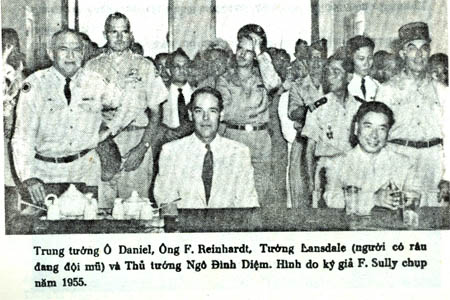
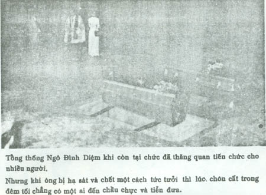
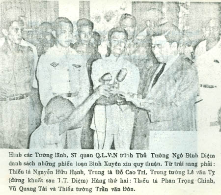
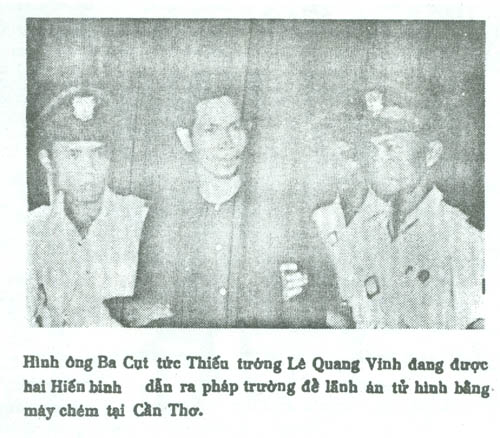

GHI CHÚ THÊM
Khi bạn L.T. đã dịch xong cuốn hồi ký này của Tướng Lansdale, chúng tôi có đọc lại lần cuối cùng đem đi xin kiểm duyệt trước khi ấn hành để gửi đến bạn đọc.
Đọc hết bản dịch của tập hồi ký này chúng tôi nhận thấy tác giả Lansdale đã ghi đúng lại sự thật về những diễn tiến từ năm 1950 đến 1963 trong thời gian ông nhận những công tác đặc biệt của chính phủ Hoa Kỳ ủy nhiệm cho ông thực hiện tại Việt Nam. Nhất là nhiệm vụ tạo thêm uy tín cho Thủ Tướng Ngô Đình Diệm bình định miền Nam khỏi mất vào tay Cộng Sản.
Bởi vậy những ngày đầu ông Ngô Đình Diệm về nước đã cần có những cố vấn bên cạnh để xếp đặt những chương trình an dân và bình định miền Nam, cũng như việc kết hợp các giáo phái và đảng phái tại miền Nam lại thành một lực lượng chống Cộng duy nhất
Tất cả những diễn tiến trên đã được tác giả ghi lại trung thực đầy đủ. Chúng tôi đã coi tập hồi ký này như một tài liệu lịch sử rất quí giá cho những ai đã và đang cùng lưu ý đến vận mệnh dân tộc. Tuy nhiên có một vài sự việc đã xẩy ra trong thời gian trên có thể coi là quan trọng, nhưng tác giả Lansdale đã không viết rõ ra. Có lẽ một phần vì tác giả chưa được ai tiết lộ cho biết, hoặc chính tác giả biết rõ hơn ai hết nhưng vì lý do này, nọ nên tác giả không tiện ghi ra giấy trắng mực đen chăng? Như vụ Tướng Trình Minh Thế bị tử thương mà tác giả không quả quyết là Tướng Thế bị chết vì viên đạn của phe nào: Bình Xuyên? Thực dân Pháp, hay Thủ tướng Diệm?
Nhưng nếu Tướng Thế đã vì hợp tác với chính phủ Quốc gia, ủng hộ Thủ tướng Ngô Đình Diệm rồi Tướng Thế mang quân đi dẹp Bình Xuyên và tử thương tại cầu Tân Thuận thì không ai thắc mắc và mỗi người chỉ để trong lòng sự ngưỡng mộ và mến tiếc một vì sao cương trực can đảm của Quốc gia sao lại sớm tắt giữa lúc miền Nam đang bị các bè phái và giáo phái nổi lên chống đối nhau. Đằng này khi Tướng Thế chết được ít lâu thì người ta lại rỉ tai nhau bàn tán là Tướng Thế chết vì chính ông Ngô Đình Diệm cho người hạ sát trong lúc Tướng Thế đang mải chỉ huy ở trên cầu Tân Thuận. Rồi dân chúng tại rỉ tai nhau là “ ông Diệm, ông Nhu sợ uy tín của Tướng Thế mạnh và sẽ có ngày lật đổ ông Diệm để nắm ghế Thủ Tướng. Bởi vậy ông Diệm và ông Nhu đã bàn nhau cho người bí mật hạ sát Tướng Thế rồi chính phủ đổ tội cho phe Bình Xuyên và thực dân Pháp gây ra cái chết cho Tướng Thế.”
Và những thắc mắc, nghi ngờ trên đã ăn sâu vào trong lòng một số người dễ tính. Chả thế đến ngày cuối năm vừa qua một thân hữu của chúng tôi trong khi ngồi bàn chuyện in sách cùng chúng tôi, thân hữu nọ đã nhắc lại chuyện Tướng Thế bị chết và thân hữu tôi đã nói:
– Năm 1956, tôi làm ở Bộ Thông Tin và tôi là nhân viên kiểm duyệt sách báo ngoại quốc, tình cờ tôi được đọc một cuốn sách bằng Pháp ngữ do một ký giả tên là gì tôi quên mất, nhưng chắc chắn là ký giả đó là người Pháp. Ký giả này đã thuật lại cái chết của Tướng Thế và nói là một người Việt tên là Lương đã được Thủ tướng Ngô Đình Diệm sai ra cầu Tân Thuận nhập vào đám phiến loạn Bình Xuyên để bắn chết Tướng Thế. Sau khi thi hành xong nhiệm vụ trên, người này (ông Lương) về trình diện Thủ tướng Diệm và đã được ông Diệm thưởng cho một số tiền rất lớn và cho lên máy bay đi Pháp sinh sống với một thẻ căn cước tên mới. Hiện nay người này còn ở Pháp.
Rồi thân hữu của chúng tôi còn tiết lộ thêm:
– Chính tôi đọc hết cuốn sách trên và đã ra lệnh cấm lưu hành tác phẩm đó tại Việt Nam.
Khi chúng tôi hỏi tên tác phẩm lịch sử trên là gì thì thân hữu của chúng tôi nói là cuốn Les âmes errantes (Những vong hồn phiêu bạt) tác giả …(?)
Sau khi nghe xong câu chuyện của thân hữu trên kể lại, chúng tôi cũng hơi thắc mắc về cái chết của Tướng Thế và tự thầm nghĩ tại sao ông Diệm lại có mưu kế hèn hạ và thâm độc đi hạ sát một chiến hữu Quốc gia đã về hợp tác và đang cầm quân dẹp loạn như lời ký giả Pháp đã ghi trong cuốn Les âmes errantes. Bởi những thắc mắc dồn dập từ nhiều phía mà chúng tôi đã nghe được, nên trước khi ấn hành tập hồi ký này bằng bản Việt ngữ chúng tôi đã đi tìm gặp một vài người thân cận của Tướng Thế để tìm hiểu sự thật về cái chết của Tướng Thế. Nhất là Tướng Thế, ông Diệm cả hai đều đã mồ xanh mả đẹp rồi nên chúng tôi hy vọng sẽ được nghe sự thật do mấy người trong cuộc thuật lại trung thực và không e ngại gì.
Và người duy nhất chúng tôi được gặp là Thiếu tướng Văn Thành Cao nguyên là Tư Lệnh phó của Quân Đội Quốc Gia Liên Minh (Cao Đài ly khai) do Thiếu Tướng Trình Minh Thế làm Tư lệnh chống Cộng và đánh thực dân từ năm 1949. Ông Văn Thành Cao được Thủ tướng Ngô Đình Diệm thăng cấp Thiếu tướng Q.L.V.N. sau khi tướng Thế tử thương và Tướng Văn Thành Cao đã thay Tướng Thế cầm quân dẹp loạn Bình Xuyên nên Tướng Cao đã được biết rất rõ cuộc đời Tướng Thế và cái chết của Tướng Thế.
Khi chúng tôi hỏi về sự liên hệ giữa cố Tổng Thóng Ngô Đình Diệm với cố Trung tướng Trình Minh Thế cũng như giữa Tướng Lansdale với Tướng Thế, thì Thiếu tướng Văn Thành Cao chậm rãi trả lời như sau:
– Sự liên hệ giữa cố Tổng Thống Ngô Đình Diệm với cố Trung tướng Trình Minh Thế thực tình không phải chỉ quen biết và trở nên đoàn kết khi chúng tôi mang Quân Đội Quốc Gia Liên Minh về hợp tác với Chính phủ Saigon năm 1954 mà thực sự khi chúng tôi còn ở ngoài khu núi Bà Đen Tây Ninh, trước 1951 lúc đó ông Ngô Đình Diệm chưa về nước làm Thủ tướng nhưng ông Diệm vẫn gửi thư liên lạc với Tướng Trình Minh Thế và ông Diệm vẫn hy vọng khi nào về nước chấp chánh sẽ được Tướng Thế về hợp tác để củng cố quân đội chống Cộng mạnh mẽ và quét sạch thực đân. Bởi vậy khi ông Ngô Đình Diệm về nước giữ chức Thủ tướng, ông Dịệm đã nghĩ ngay đến việc nhờ Tướng Lansdale đi gặp tướng Trình Minh Thế để thực hiện hy vọng và lời hứa khi trước.
Khi Tướng Lansdale đến núi Bà Đen để gặp Tướng Trình Minh Thế thì tôi có biết nhưng không được chứng kiến hai ông Tướng nói chuyện và bàn gì. Bởi vì ở chiến khu Bà Đen có mấy ngọn núi, Tướng Trình Minh Thế và Bộ Tư Lệnh Quân Đội Quốc Gia Liên Minh đóng ở một ngọn núi bên này sông, còn bên kia sông tôi chỉ huy một đơn vị thứ hai cũng nằm ở một ngọn núi cách chỗ Tướng Thế và Bộ Tư lệnh độ vai trăm thước thôi, nhưng những lúc đó vì tôi còn bận lo hành quân nên những việc chính trị đã do Tướng Thế quyết định cả. Nhung cứ mỗi lần Tướng Lansdale đến núi Bà Đen là Tướng Thế có liên lạc và báo tin cho tôi biết để tôi lo vìệc bố phòng và phòng hờ những bất trắc nếu xẩy đến. Qua mấy lần Tướng Lansdale đến gặp Tướng Thế, rồi Tướng Thế ra lệnh cho tôi và những anh chị em trong Quân Đội Quốc Gia Liên Minh sửa soạn quân trang để trở về Saigon hợp tác với chính phủ Saigon do Thủ tướng Ngô Đình Diệm lãnh đạo.
Khi Tướng Trình Minh Thế và chúng tôi về hợp tác với chính phủ thì Thủ tướng Ngô Đình Diệm có vẻ lấy làm mãn nguyện lắm và riêng cá nhân ông Diệm rất quý Tướng Thế, bởi vì Tướng Thế là một chiến sĩ Quốc gia chống Cộng và lại đả Thực. Vì vậy khi có sự lộn xộn giữa phe Tướng lãnh của thực dân Pháp muốn lật đổ ông Ngô Đình Diệm, Tướng Thế đã là người dám thẳng thắn đứng ra bênh vực Thủ tướng Diệm và Tướng Thế còn can đảm rút súng (*Khi nào tái bản tập hồi ký này, với hoàn cảnh thuận tiện chúng tôi sẽ cho ấn hành tấm hình do ký giả Sochurek chụp được và báo Life có đăng lại.) ra nói nếu ông Tướng nào định đảo chánh hay lật đổ Thủ tướng Diệm, ông sẽ loại trừ ngay.
Chúng tôi có hỏi Tướng Cao vì nguyên nhân nào thúc đẩy Tướng Thế cầm quân đánh Bình Xuyên và có đúng Tướng Thế bị tử thương vì viên đạn của Bình Xuyên bắn hay của Thực dân Pháp bắn? Còn huyền thoại cái chết của Tướng Thế là ông Ngô Đình Diệm xếp đặt và cho người ám sát trong lúc Tướng Thế đang hành quân ở cầu Tân Thuận có đúng như trong cuốn sách của một ký giả Pháp viết và đã xuất bản không?
– Về địa vị và tiền bạc thì chắc chắn là không rồi. Bằng chứng là khi đồng ý mang quân về hợp tác với chính phủ Quốc gia, Tướng Thế và chúng tôi đã phải chịu sự đồng hóa của Q.L.V..N. rồi và quyền hành, lương bổng cũng như những người lính trong Q.L.V.N. Nhưng chúng tôi chịu khép mình trong khuôn khổ của Q.L.V.N. vì chúng tôi cùng lý tưởng chống Cộng, đả Thực để xây dựng một Quốc gia Việt Nam độc lập hùng mạnh không nhiều bè phái chia rẽ.
Còn tại sao Tướng Thế lại đứng ra cầm quân đánh Bình Xuyên là vì lúc đó trong Q.L.V.N. đa số các cấp chỉ huy đều xuất thân từ trường Võ Bị của Pháp do Pháp đào tạo vả lại có quốc tịch Pháp nên Thủ tướng Diệm đã không mấy tin cậy, và đến khi Thủ tướng Diệm ra lệnh cho mấy ông Tướng, Tá mang quân đi đánh Bình Xuyên thì ông nào cũng ngần ngừ và e ngại rồi trì hoãn. Bởi vậy Thủ tướng Diệm mới quyết định cử Tướng Trình Mình Thế chỉ huy cánh quân dẹp Bình Xuyên. Và khi Tướng Thế đã nhận lời mang quân đi đánh Bình Xuyên, các ông bên Bộ Tổng Tham Mưu mới điều động quân cùng đi. Có thể nói chính Tướng Thế là người đầu tiên khởi xướng việc đánh Bình Xuyên hay đúng hơn dẹp những tên phiến loạn tay sai của thực dân Pháp. Bởi vậy bọn Pháp họ thù Tướng Thế lắm. Vì vậy khi được tin Tướng Thế cầm quân đánh Bình Xuyên ở cầu Tân Thuận, bọn Pháp đã cho máy bay và tàu thủy lởn vởn ở khu vực nầy, rồi thừa cơ lính Pháp đã bắn lén lên cầu chỗ Tướng Thế đang đứng chỉ huy hành quân và đã làm Tướng Thế tử thưương.
Và tôi có thể quả quyết viên đạn gây ra cái chết của Tướng Thế không phải đạn của Bình Xuyên, vì lúc đó quân Bình Xuyên đã bỏ đi xa cầu rồi và tầm đạn của Bình Xuyên không sao tới chỗ Tướng Thế đứng. Đây là đạn của bọn Pháp bắn lén lên. Có thể do từ tàu Pháp bắn lên hoặc từ một cao ốc nào gần đó lính Pháp bắn ra. Còn nói là Tướng Thế chết là do Thủ tướng Diệm cho người hạ sát thì vô lý quá. Nhưng vì bọn thực dân quỷ quái nên nó đã bịa ra chuyện Thủ tướng Diệm giết Tướng Thế rồi nó thuê một ký giả viết thành sách câu chuyện bịa đặt trên. Bởi vậy một số người nhẹ dạ khi đọc cuốn sách đó đã tin là có thật. Và một lần nữa tôi đoan chắc với mọi người là Tướng Trình Mình Thế chết vì Thực dân bắn chứ không ai đâu.
Thành thật cám ơn Thiếu tướng đã cho chúng tôi biết rõ sự thật về cái chết của cố Tướng Trình Minh Thế. Và cũng nhân dịp ấn hành bản dịch tập hồi ký của Tướng Lansdale trong đó tác giả có nhắc nhiều đến Tướng Thế, vậy chúng tôi xin được ghi chú thêm về tiết lộ quý giá lịch sử mà Thiếu tướng vừa dành cho chúng tôi. Phần Ghi chú thêm này chúng tôi xin được in ở những trang cuối tác phẩm dịch này để gửi đến bạn đọc và chúng tôi cũng hy vọng sau khi đọc xong tác phẩm dịch này mọi người sẽ không còn thắc mắc và nghi ngờ về cái chết của Tướng Thế.
***
Để chứng minh sự thân thiết giữa Thiếu tướng Văn Thành Cao và tác giả Lansdale, chúng tôi xin chụp lại bản sao thủ bút của tác giả Lansdale đề tặng Thiếu tướng Văn Thành Cao tác phẩm này bằng nguyên tác Anh ngữ: IN THE MIDST OF WARS. Thêm vào tập hồi ký dịch này là 12 hình phụ bản của nhà xuất bản Văn Học để ghi lại chứng minh một giai đoạn lịch sử Việt Nam những năm 1954-1963 đã qua nhiều vinh, nhục bởi những sự phá rối của thực dân và Cộng Sản gây nên.
 .
.

.


Ngoài việc in lại thủ bút của tác giả Lansdale và những hình ảnh cố Tổng thống Ngô Đình Diệm, Tướng Trình Minh Thế, cùng các yếu nhân khác… để chứng minh tài liệu, chúng tôi không có ẩn ý nào khác. Mong tất cả quý vị đừng hiểu lầm. Đa tạ.
Nhà xuất bản
VĂN HỌC
Tác phẩm
TÔI LÀM QUÂN SƯ CHO TT NGÔ ĐÌNH DIỆM
được L.T. dịch sang Việt ngữ
xong ngày 25-12-1972 tại Sàigòn (Việt Nam)